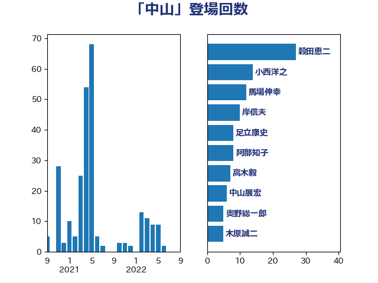

単語「中山」

| 穀田恵二 | 日本共産党 | 27 回 |
| 小西洋之 | 立憲民主党 | 14 回 |
| 馬場伸幸 | 日本維新の会 | 12 回 |
| 岸信夫 | 自由民主党 | 10 回 |
| 足立康史 | 日本維新の会 | 8 回 |
| 阿部知子 | 立憲民主党 | 8 回 |
| 高木毅 | 自由民主党 | 7 回 |
| 中山展宏 | 自由民主党 | 6 回 |
| 奥野総一郎 | 立憲民主党 | 5 回 |
| 木原誠二 | 自由民主党 | 5 回 |
| 鈴木英敬 | 自由民主党 | 5 回 |
| 長峯誠 | 自由民主党 | 5 回 |
| 井上哲士 | 日本共産党 | 4 回 |
| 大串博志 | 立憲民主党 | 4 回 |
| 細田博之 | 自由民主党 | 3 回 |
| 船田元 | 自由民主党 | 3 回 |
| 赤嶺政賢 | 日本共産党 | 3 回 |
| 鈴木宗男 | 日本維新の会 | 3 回 |
| 階猛 | 立憲民主党 | 3 回 |
| 伊藤渉 | 公明党 | 2 回 |
| 大西健介 | 立憲民主党 | 2 回 |
| 斎藤嘉隆 | 立憲民主党 | 2 回 |
| 新垣邦男 | 立憲民主党 | 2 回 |
| 新藤義孝 | 自由民主党 | 2 回 |
| 新谷正義 | 自由民主党 | 2 回 |
| 杉本和巳 | 日本維新の会 | 2 回 |
| 松川るい | 自由民主党 | 2 回 |
| 海江田万里 | 立憲民主党 | 2 回 |
| 秋葉賢也 | 自由民主党 | 2 回 |
| 若宮健嗣 | 自由民主党 | 2 回 |
| 茂木敏充 | 自由民主党 | 2 回 |
| 藤田文武 | 日本維新の会 | 2 回 |
| 西村康稔 | 自由民主党 | 2 回 |
| 赤羽一嘉 | 公明党 | 2 回 |
| 重徳和彦 | 立憲民主党 | 2 回 |
| 青山繁晴 | 自由民主党 | 2 回 |
| 麻生太郎 | 自由民主党 | 2 回 |
| 三谷英弘 | 自由民主党 | 1 回 |
| 中川正春 | 立憲民主党 | 1 回 |
| 中根一幸 | 自由民主党 | 1 回 |
| 伊藤孝江 | 公明党 | 1 回 |
| 佐藤茂樹 | 公明党 | 1 回 |
| 加藤勝信 | 自由民主党 | 1 回 |
| 吉川元 | 立憲民主党 | 1 回 |
| 坂本哲志 | 自由民主党 | 1 回 |
| 小山展弘 | 立憲民主党 | 1 回 |
| 小沢雅仁 | 立憲民主党 | 1 回 |
| 岸真紀子 | 立憲民主党 | 1 回 |
| 川合孝典 | 国民民主党 | 1 回 |
| 平将明 | 自由民主党 | 1 回 |
| 斉藤鉄夫 | 公明党 | 1 回 |
| 早稲田ゆき | 立憲民主党 | 1 回 |
| 松沢成文 | 日本維新の会 | 1 回 |
| 櫻井周 | 立憲民主党 | 1 回 |
| 渡辺猛之 | 自由民主党 | 1 回 |
| 田村憲久 | 自由民主党 | 1 回 |
| 石原正敬 | 自由民主党 | 1 回 |
| 秋野公造 | 公明党 | 1 回 |
| 篠原豪 | 立憲民主党 | 1 回 |
| 菅義偉 | 自由民主党 | 1 回 |
| 越智隆雄 | 自由民主党 | 1 回 |
| 野上浩太郎 | 自由民主党 | 1 回 |
| 高木啓 | 自由民主党 | 1 回 |